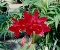
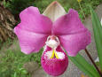
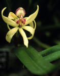

Thursday, November the 25th, 2004
back to: title, date or indexes
Plant-fanciers probably know that there is a variety of orchid named after ex-Potus Richard Milhous Nixon. Actually, it is called the “Richard Nixon” orchid, omitting that terrific middle name, which is cause for regret. Despite untold hours of searching on the internet I have been unable to find a picture of what I have no doubt is a magnificent piece of foliage, so here are some other orchids, not one of which is called “Watergate”, “H R Haldeman”, “Six Crises” or “G Gordon Liddy”, let alone “Richard Nixon”, more's the pity.
